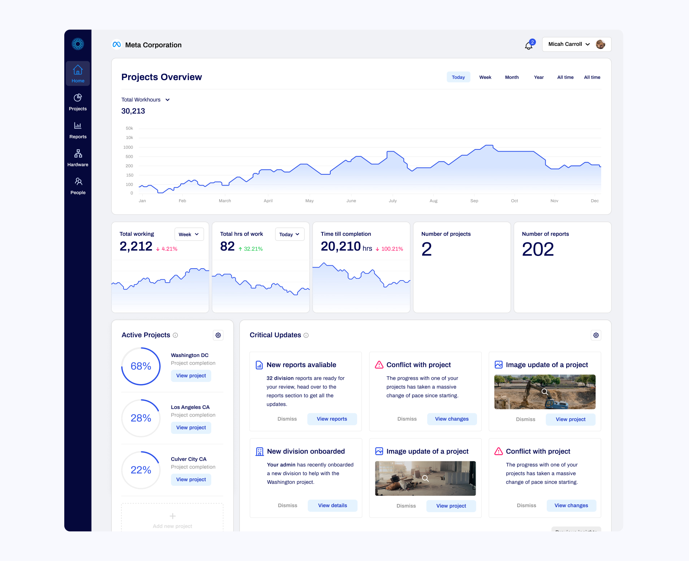
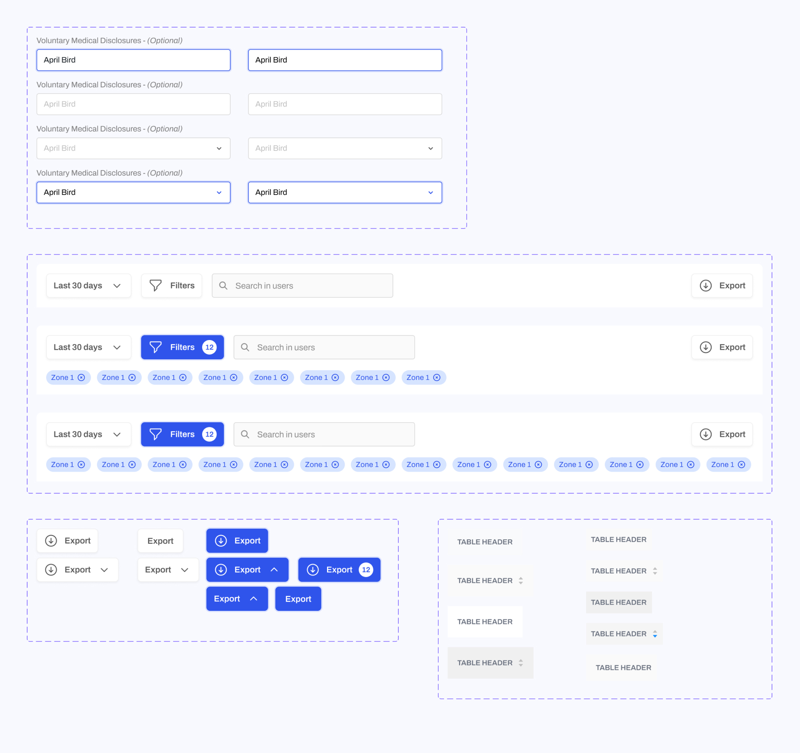

A contract role I took for 4 months to help revise and lead the UI visual during a revamp of the entire product.
Overview
Eyrus at a top level view is a complete project management tool to cover the various teams involved in a construction project. Large amounts of data needed to be distilled to ensure accuracy on project completion, which meant plenty of data visualization issues to solve.
Organization view
Overview at the admin level to compile all data of projects within a company.
How the admin would select the project they want to view.
What are we looking at here?
One of the challenges was distilling what information should be viewed at an admin level, and what would the central project data view look like. Within the main project level users other than admins will have access, and figuring out what information they could see also proved an issue.
Breaking down components.
Within this project, I played a huge role in building up a light design system to pull the product into the redesign. Huge huge fan of making table components once you figure out the auto layout.
In Retrospective
Working on this product brought the challenge of just working within something competely foreign (construction).. and learning how to setup intermediate auto layout symbols within data visualization components. If I were to go back in time, I’d vouch for spending a tad bit more time in the research section before diving into revising the UI.